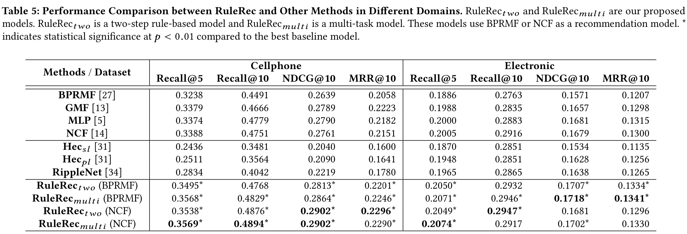

WWW19_Jointly Learning Explainable Rules for Recommendation with Knowledge Graph
本文是发表在WWW19上的使用知识图谱做推荐的工作，本文将按照下面几个方面对文章进行解析。
- Motivation
- Model
- Experiments
Motivation
目前的推荐系统一般使用side-information进行推荐，然而这些方法总是存在着一些问题。
- 通过神经网络的方式训练的embedding进行推荐的可解释性很差，同时难以调参。
- 通过在图中提取特征(meta-path等)，这种方式通常需要我们手动构造meta-path这样的话，我们会忽略掉一些物品之间的关系。
本文希望提出一个合并两种方法的框架进行推荐，做一个相对完善的推荐系统。
- 首先通过在知识图谱中挖掘规则，用于辅助推荐
- 将规则融合到推荐系统当中
作者精心挑选了数据集，采用了Amazon的购物的数据集用于进行实验，这是因为用户在购物的时候，我们进行的推荐和其购买历史有着一定的推理的关系。比如说当用户购买了手机的话，我们就不应该对用户再推荐手机，而是推荐一些与手机相关的周边产品，比如说耳机之类的。这种推荐方式，传统的基于矩阵分解的方法很难做到。
Model
本文采用了两种基本的推荐系统，BPRMF（传统的矩阵分解模型）和NCF（基于神经网络的推荐系统）作为基本推荐模型。同时在这些模型的基础上，使用自己提出的RuleRec推荐模块叠加到之前的两个模块其中之一。
BPRMF
打分函数：
优化目标：
NCF
打分函数
优化目标
RuleRec
首先作者通过freebase和DBPedia当作知识图谱，之后通过实体链指的方式得到实体与物品之间的对应表。与此同时，作者将Amazon里面的几种关系也添加到了freebase里面，分别是BuyTogether、AlsoBuy等。
rule set
这一部分，文中没有说明最初的规则集合是怎么得到的，只说了rule的筛选规则。
所谓rule。指的就是，如果实体之间满足了什么关系，那么很有可能明显的蕴含着一些关系。比如说一个人的出生地是北京，那么他的国籍很有可能就是中国。
可以通过上图3，文中得到了一个rule集合，这些rule所推出来的结果，都是Amazon数据集里的那四种关系。于是我们可以通过学习每种rule的权重。当用户购买了物品A，那么对物品B的感兴趣程度，其实我们可以通过上面的一系列规则进行衡量。
rule calculate
rule selection
选择的方式有两种 ，分别表示为hard-selection和soft-selection
Hard-selection
- chi-square
- Linear regrssion
- Sigmoid
之后选择top-50的规则，通过一个归一化表示得到权重$w$。使用这个方式的话，相当于整个流程拆成了两个部分，第一个部分是选择规则，第二份部分是将规则和推荐结合到一起。
Soft-selection
这个的话，相对麻烦一些，简而言之，就是不筛选规则，而是直接把和第二部分的推荐一起训练。做一个联合学习的方法。
recommendation
在这里的话，$F$所表示的是$i,k$之间进过规则集合$R$之后是否有通路。
其中,$f_w$的构建方式很多种，$w$表示的是前面的规则归一化的结果。
Hard filtering
Equal weight
Selection weight
Learn together
Experiments

可以看到实验结果还是相当不错的。但是这两个数据集上，Hec和RippleNet的效果都不如传统的矩阵分解的方法，说明这两种方法的结果似乎都不是很稳定啊。